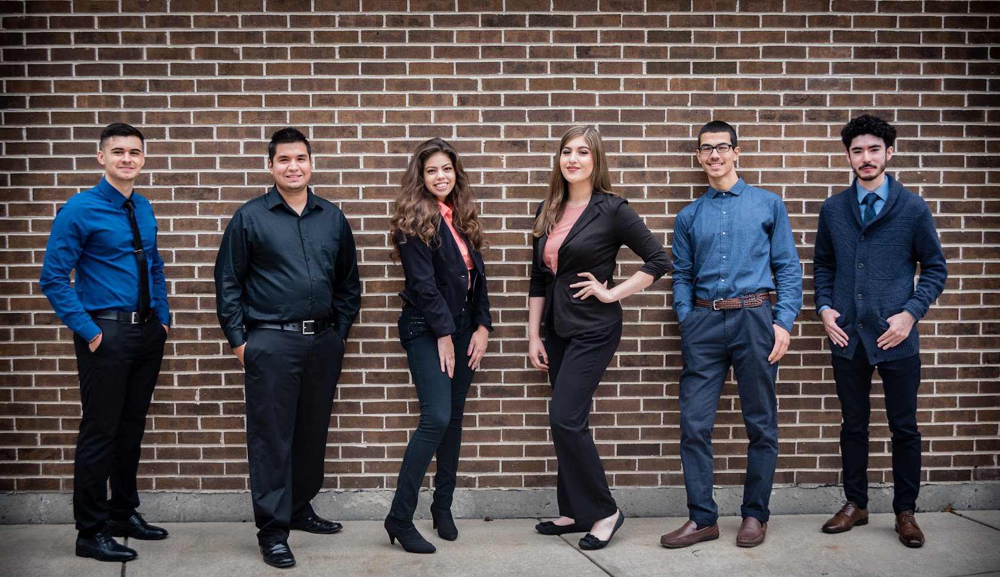

Society of Hispanic Professional Engineers
General Member / Technical Chair / Technical Workshop Lead
August 2021 - Present

All Latin Alliance
General Member / Vice President
January 2017 - May 2019
August 2021 - Present
January 2017 - May 2019
The Society of Hispanic Professional Engineers (SHPE) is the largest association for Hispanics in STEM in the U.S. SHPE is driven to empower Hispanics to each of their fullest potential through volunteering, mentorship, workshops, and amongst other events.
Given that I transferred to Illinois Tech as a virtual student in August 2020, I also joined SHPE-IIT as a virtual general member. I participated as much as I could during the virtual semester and by the following semester I was selected as a sponsored candidate to attend the Regional Leadership Development Conference 2021. A few weeks afer RLDC, I ran for Technical Chair on the executive board and recieved the position towards the end of the Spring semester. During the summer, I attended the National Institute For Leadership Advancement 2021 to further familiarize myself with leadership strategies to fulfill my role as Technical Chair. All in one, in the time I've been a member of SHPE, the Illinois Tech SHPE Chapter was awarded the Regional Chapter of the Year at the 2021 National Convention in Orlando, Florida, Membership Booster Award, and the Blue Chip Award.
As the Technical Chair, I have reconstructed our chapter's old website by transferring it to a new domain, enhancing the user interface, and updating it with media, recent events, and daily updates to upcoming events. The transferring of our website to a new domain helped cut down our costs by 60%. In addition, I have also written scripts in Java to automate tedious administrative tasks of our Secretary and Vice President officers. For the Spring 2022 semester, I will be taking lead on a series of Technical Workshops throughout the semester to teach our general and executive members how to increase their personal branding by developing their own personal website using HTML, CSS, and Bootstrap.
Learn more about SHPE-IITAll Latin Alliance (ALA) seeks to promote awareness and support for the Latinx population at Prairie State Community College through a variety of events offered throughout the year.
I became an active member of ALA in 2017; attending a myriad of workshops, volunteer events, and conferences (USHLI). Through my sustained dedication to be a part of the ALA organization, I ran for Vice President in 2018 and won the election. As Vice President I promoted outreach by helping coordinate a pipeline between our local high school and ALA. As a result of establishing this pipeline, we were able to coordinate a Hispanic Conference at our college consisting of over 80+ Junior and Senior Hispanic students and 6 hispanic professionals who served as speakers.